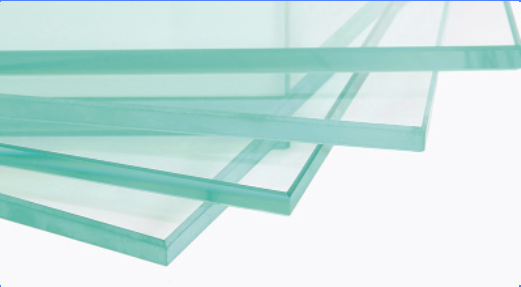
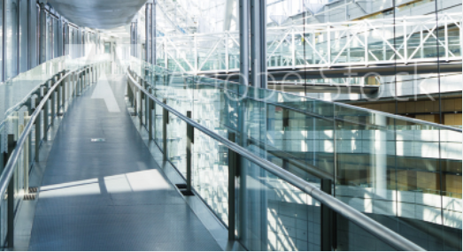

Doble vidrios hermetico.
Un Doble Vidriado Hermético o DVH, es un producto compuesto por dos vidrios Float, separados entre sí por una cámara de aire seco y quieto que le brinda su capacidad de aislante térmico, herméticamente sellado al paso de la humedad y al vapor de agua.
Principales ventajas.
Aumenta en más del 100% el aislamiento térmico del vidriado, mejora el aislamiento acústico, disminuye hasta un 70% el consumo de energía de climatización por las pérdidas de calor a través del vidrio, elimina la condensación de humedad sobre el vidrio evitando que se empañe y anula el efecto de “muro frío” aumentando el confort junto a la ventana.
Consulta

Float.
Float es un cristal plano transparente, libre de distorsión, con caras planas y paralelas y superficies brillantes pulidas a fuego. De espesor constante y masa homogénea, presenta una transparencia perfecta. Es el único vidrio que satisface las exigentes normas internacionales de calidad vigentes en la industria automotriz.
Para reducir el ingreso de calor solar radiante y disminuir las molestias causadas por una excesiva luminosidad, se produce coloreado en su masa o con un revestimiento reflectivo aplicado sobre una de sus caras.
Cuando se fabrica Float de color, se incorporan a la mezcla óxidos metálicos que son los que tiñen la masa del vidrio. La intensidad del tono aumenta con el espesor.
Consulta

Blindex.
Blindex es la solución ideal para cerramientos seguros. El vidrio Blindex se fabrica en una línea de producción de última generación uniendo dos láminas de vidrio foat a una interlámina plástica de alta elasticidad (PVB). Su gran resistencia y rotura segura evitan accidentes con vidrio ante un desafortunado impacto.
En todas las áreas vidriadas de riesgo ó susceptibles de impacto humano, es imprescindible y obligatorio usar Blindex. Antedichas áreas se encuentran establecidas según Norma IRAM 12595 contemplada en la Ley de Vidrio de Seguridad.
Consulta